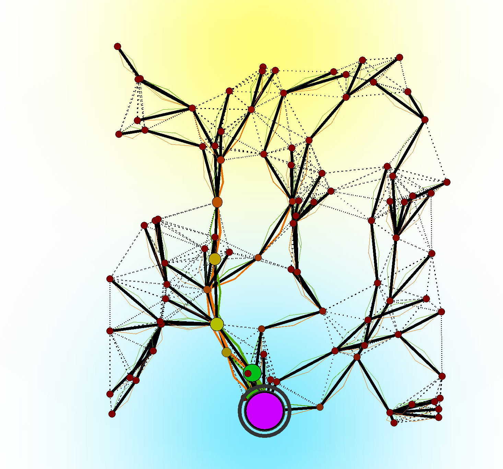
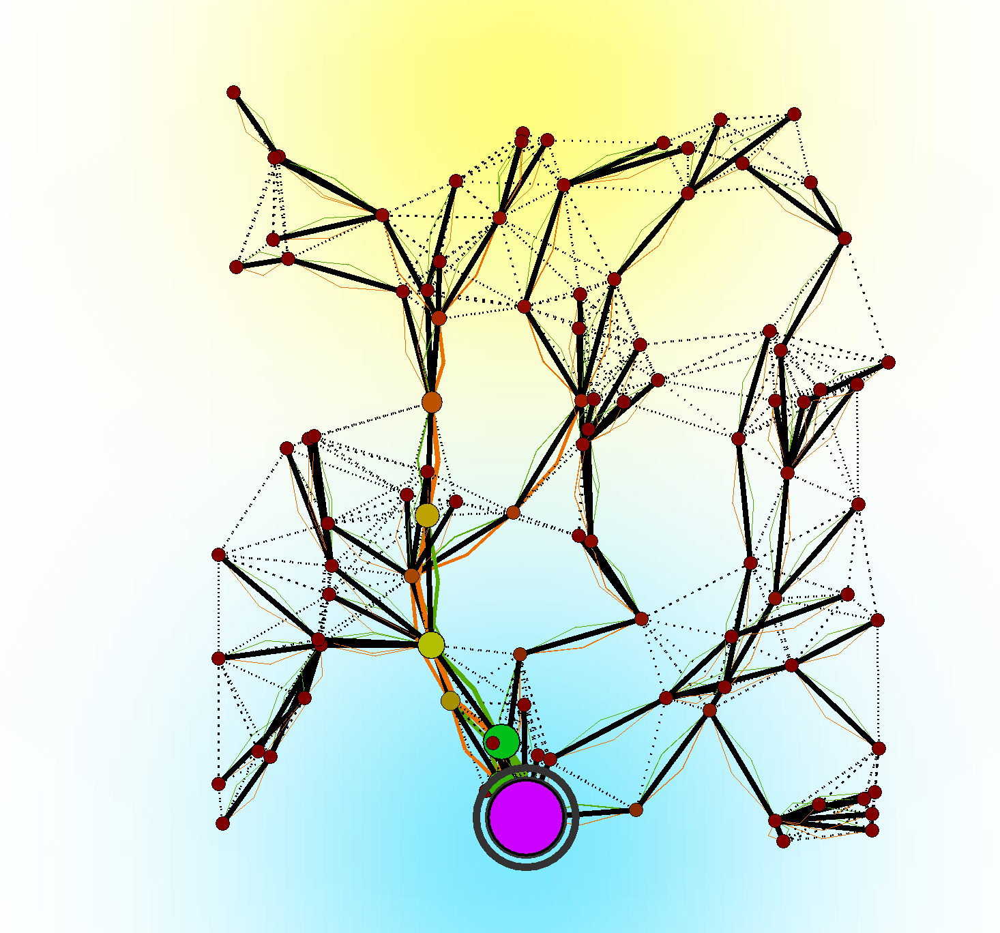
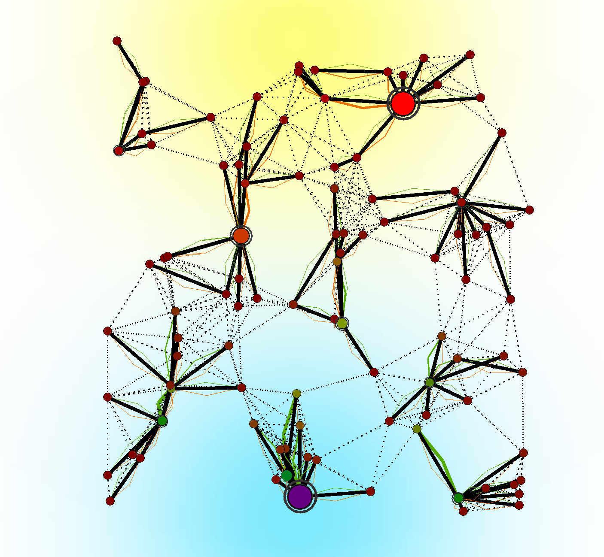
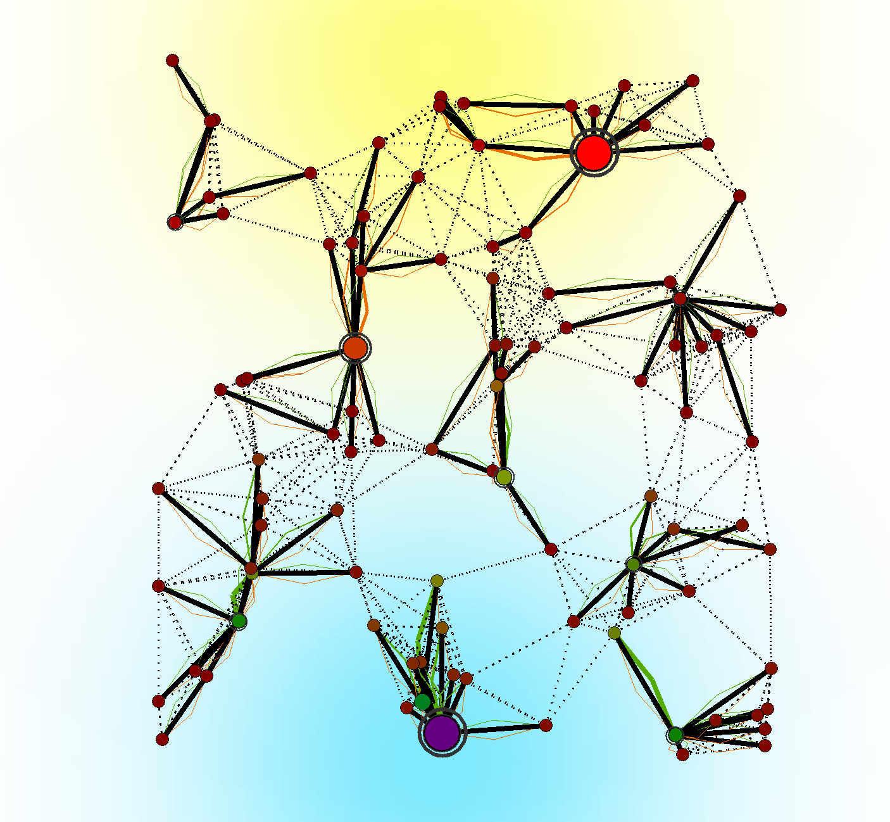
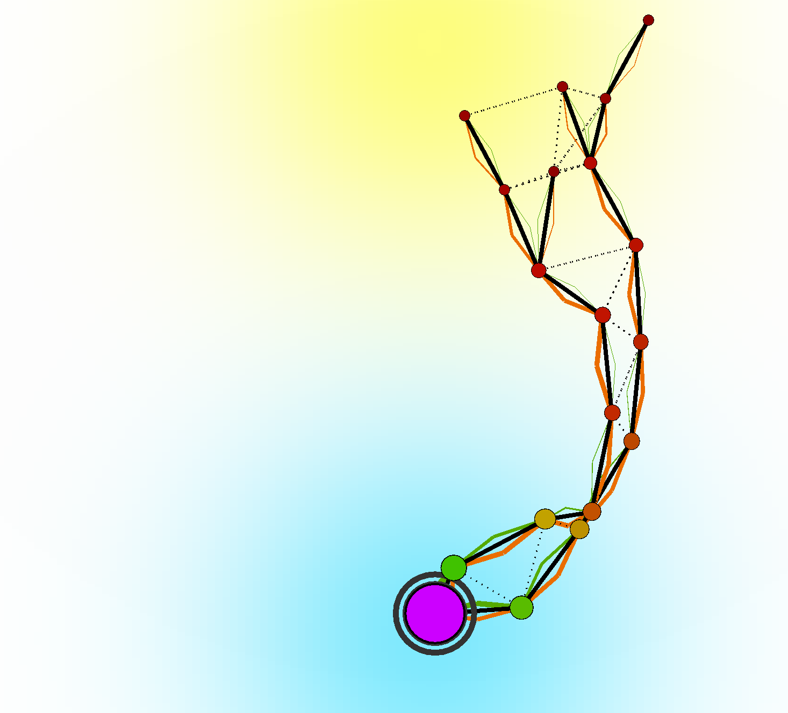
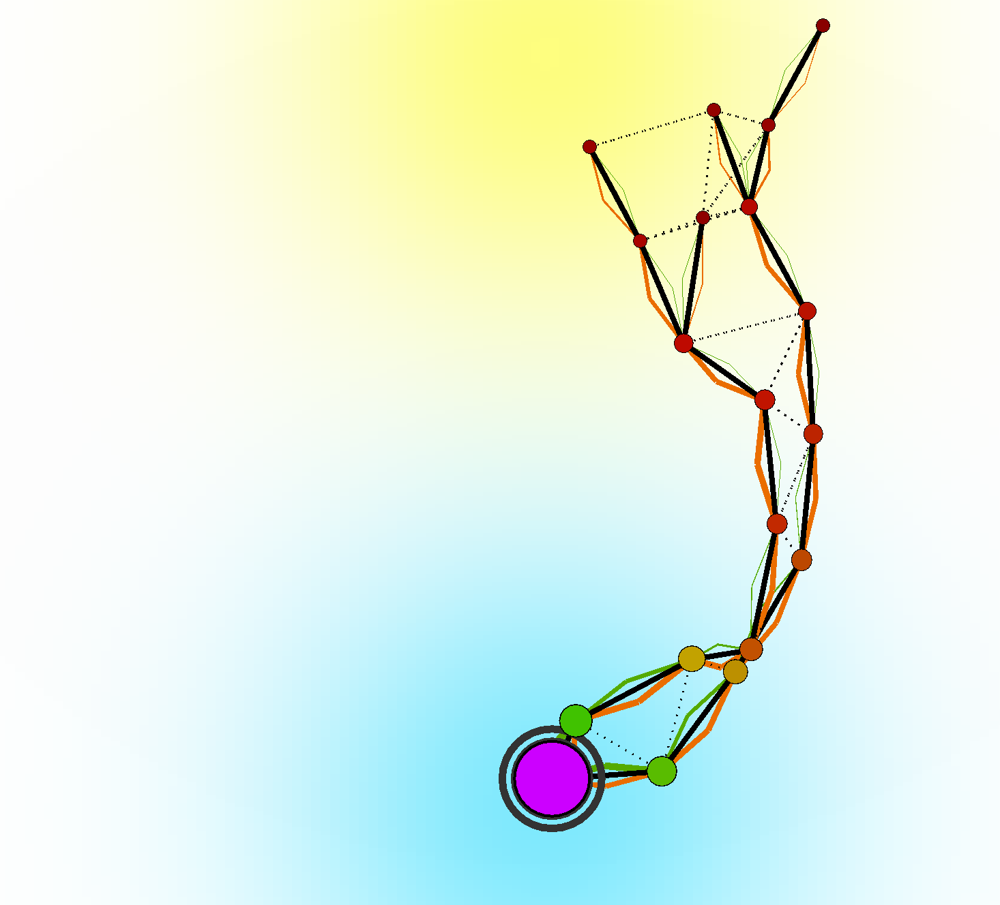

An Aggregate Vascular Morphogenesis Controller for Engingeered Self-Organising Spatial Structures
Angela Cortecchia , Danilo Pianini , Giovanni Ciatto , and Roberto Casadei

Plants

Organizations

Flocking swarms

What do they have in common?
runtime-generated hierarchical structure
Vascular Morphogenesis Controller (VMC)[1]
A model for the growth of artificial structures over time.
Works on tree-like structures, in which every node can get information from the environment.
The leaves of the tree start by sending the amount of success they sense to the root.
The root sends back an amount of resources based on the success received from the leaves, regulating the tickness of their connections.
Limitations
Implicitly synchronous.
Requires an underlying tree structure (can't work on graphs).


[1] Zahadat, P., Hofstadler, D.N., Schmickl, T. "Morphogenesis as a Collective Decision of Agents Competing for Limited Resource: A Plants Approach." 2018.
A Possible Solution
Porting VMC into a framework that by-design:
- supports graph structures and
- features asynchronous computations.
If the implementation is feasible, it will automatically overcome the limitations of the original model.
Meet Aggregate Computing[2]

A macro-programming approach that defines the collective behavior of heterogeneous devices in a self-organizing system.
Based on the Field Calculus[3], operates by manipulating distributed data structures called fields.
[3] Audrito, G., Viroli, M., Damiani, F., Pianini, D., Beal, J. "A Higher-Order Calculus of Computational Fields." 2019.
FieldVMC: Aggregate Computing-based VMC
Model
Nodes can compute.
Neighboring nodes can communicate.
Nodes have sensors:
success, resource, distance, and optionally position.
Nodes have optional actuators:
spawning and destroying.


FieldVMC: Aggregate Computing-based VMC
Implementation
(multiple) Trees are built on top of arbitrary networks using the self-organizing coordination regions (SCR)[4] pattern.
SCR performs continuously:
- Sparse leader election;
- Control region expansion from leaders;
- Upstream information flows construction;
- Decision-making and downstream propagation.


FieldVMC: Aggregate Computing-based VMC
How it works
- Leader(s) are chosen dynamically based on resource availability;
- A gradient field defines zones around each leader, organized by distance to their nearest leader;
- Nodes send data to their leader, forming a hierarchical tree;
- Leaders distribute resources based on node performance;
- Nodes act based on resources and success, spawning new nodes or self-destructing.
Supported features
- Multiple leaders: allowing easier management of large network by splitting them in sub-systems;
- Growth and shrink: different implementations of spawning/destroying strategies can lead to different structures.
- Merge and split: ihnerits self-organizing capabilities from AC, thus supports network segmentation or merging.
Application example: Germination
Self-Construction
Creates a stable structure starting from a single node.
Application example: cutting


Self-Repairing
Stabilization in two different structures starting from a damaged one.
Application example: Grafting
 

Self-Integration
Merging of two different structures into a single one.
Application example: Budding
 

Self-Segmentation
Multiple independent subsystems from a single one.
Application example: Abscission and regrowth
 

Self-Optimization
Optimized merging of two different structures.
Conclusion & Future works
The approach enables to express morphogenetic algorithm by a macroscopic perspective via aggregate computing.
Possible future directions:
- Inspect more dynamics and complex organizational scenarios;
- Development of a software library of aggregate morphogenetic blocks;
- Investigate the system response to continuous perturbations;
- Apply this approach to real-world scenarios.
Reproducible experiments here!